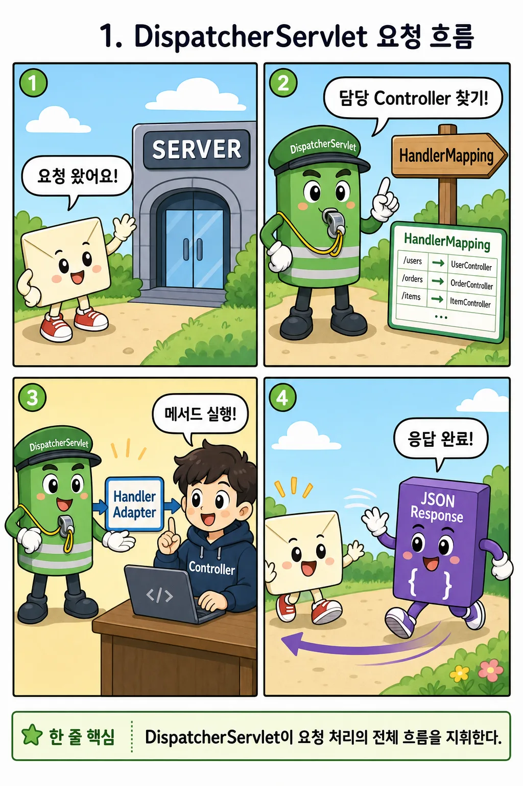
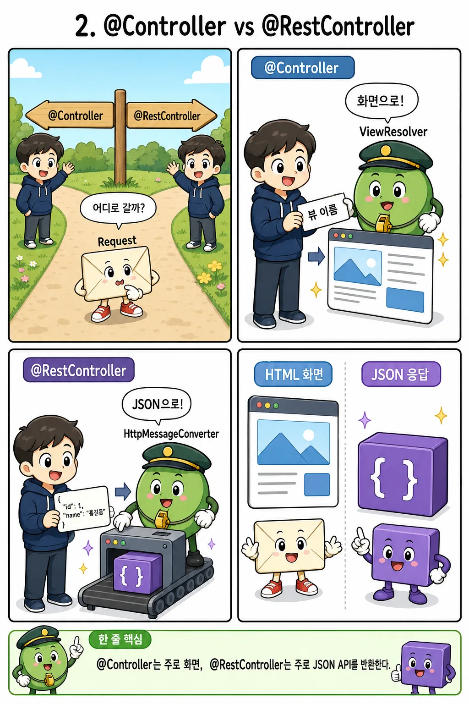
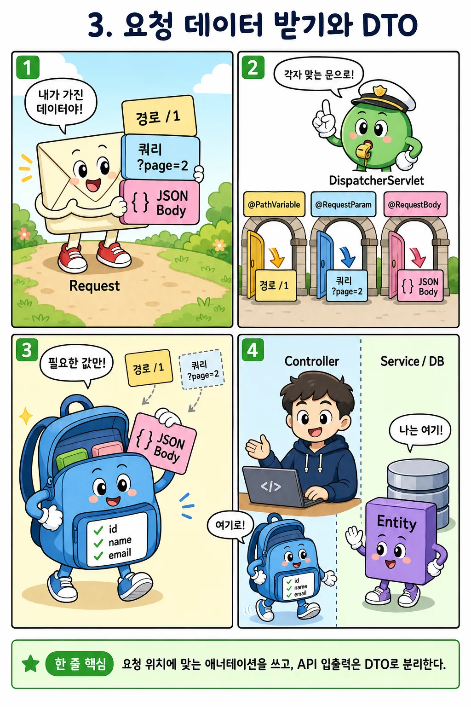
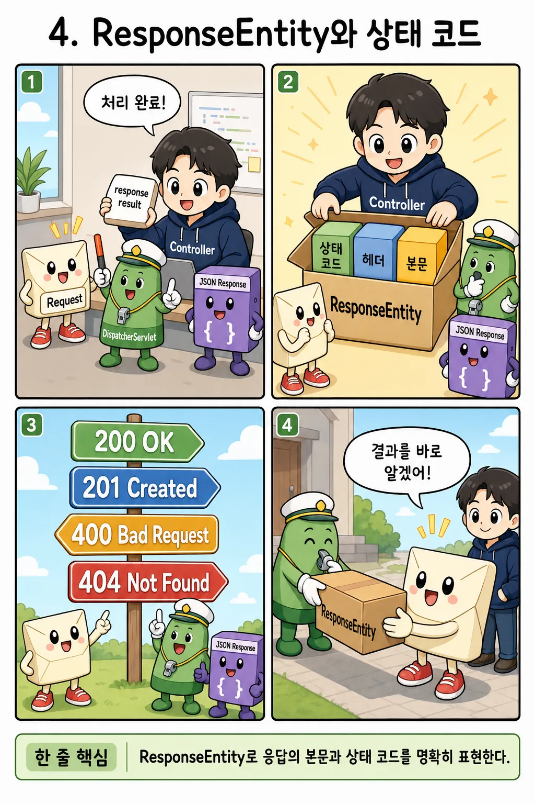
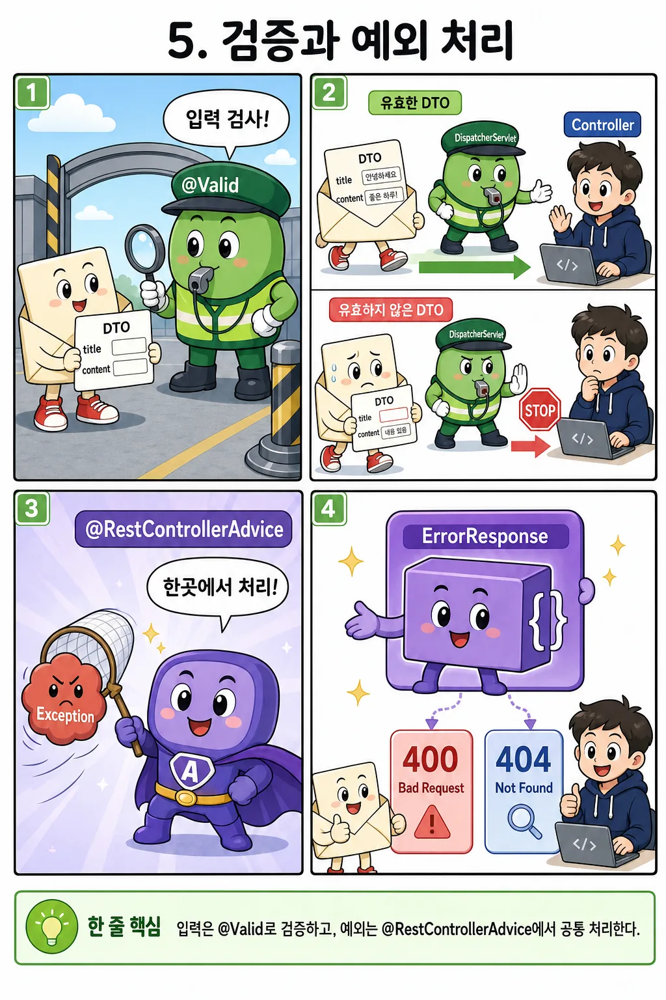

1
요청의 여정
2
두 Controller
3
데이터 받기
4
상태 코드
5
검증·예외
🖼 만화로 보기
📐 도면 시뮬레이션

▶ 재생
한 단계
⟲ 리셋
① 요청
⑦ 응답 도착
📱 클라이언트
접수처 — 모든 요청의 입구
DispatcherServlet
안내소 — 담당 메서드 찾기
HandlerMapping
준비실 — 파라미터 준비
HandlerAdapter
작업실 — 내가 쓴 코드
Controller
포장실 — 객체 → JSON
MessageConverter
발송 — 상태 코드 도장
HTTP 응답 200 OK
🖼 만화로 보기
📐 도면 시뮬레이션

@Controller 로 실행
@RestController 로 실행
Controller 메서드가 반환한 값
return "home";
이 문자열은 어디로 갈까?
@Controller 의 길
ViewResolver
"home" → templates/home.html 을 찾는다
결과: HTML 화면
홈 화면
브라우저가 그대로 화면을 그린다
Content-Type: text/html
@RestController 의 길
MessageConverter
객체 → JSON 으로 직렬화한다
결과: JSON 데이터
{
"id": 1,
"status": "주문 완료"
}
Content-Type: application/json
🖼 만화로 보기
📐 도면 시뮬레이션

단건 조회
목록 조회
글 생성
클라이언트가 보낸 요청
경로에서
쿼리에서
본문에서
자원 식별자
@PathVariable
"몇 번 글?"처럼 대상을
가리키는 값은 경로로
옵션
@RequestParam
페이지·정렬·검색어처럼
거르는 조건은 쿼리로
만들 데이터
@RequestBody
JSON 본문 통째로 →
DTO 객체로 변환된다
🖼 만화로 보기
📐 도면 시뮬레이션

조회 성공
글 생성
잘못된 입력
없는 글
권한 없음
서버의 처리 결과
상태 코드 도장
?
클라이언트의 해석
상태 코드는 서버가 클라이언트에게 보내는 공식 언어다 — 의도를 코드로 표현한다
🖼 만화로 보기
📐 도면 시뮬레이션

정상 제출 → 201
제목 없음 → 400
없는 글 → 404
통과
규칙 위반 — Controller 실행 안 됨
예외 발생
요청 도착
POST /api/posts
검사대 — 입구에서 거른다
@Valid
@NotBlank · @Size(max=30) 검사
작업실
Controller → Service
저장 로직 실행
예외 처리반 — 전역 한 곳
@RestControllerAdvice
어떤 예외든 받아 에러 응답으로 변환
성공 응답
201 Created
{"id":13,"title":"후기"}
에러 응답 — 형식은 항상 동일
400 Bad Request
도면 시뮬레이터
탭에서 개념을 고르고, 버튼으로 패킷을 움직여 보자. 각 도면은 한 화면에 다 보인다.